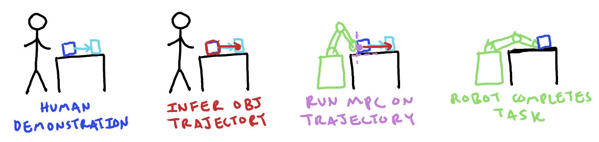

2025 Oct 03
Last meeting, like most meetings, we (I?) were (was?) slightly all over the place. There was, however, one concrete thing you wanted me to do:
So, I did that (Section 2). I mention some crackpot/other ideas in Section 3 because that is fun. I also have a bit on reconstruction and diversity in Section 4 (more related to my original proposed project).
So here is the photo of a cluttered shelf I threw together. It is not a very natural setup, but it contains enough complexity for our purposes I think:
I think this image of my convo with Qwen 3 is tentative evidence that feedback can improve VLM plans (of course there is also evidence for this in other people’s papers):
In the image the VLM is reprompted after initial plan saying the low level controller was infeasible, and only figures out to use a different object after being given a reason for the failure.
Another perspective, is that the above example is kind of contrived. After all, it seems the VLM doesn’t recognize the milk is milk in the photo when prompted for other outputs:
Perhaps I am overfitting to this example. Also, there is a very small search space of “actions” to take in the first example, and one could easily imagine random search finding the solution. Of course, maybe the VLM is really just speeding up random search by searching more intelligently—I could buy that.
There is mixed evidence on VLMs being good reasoners. On one hand, they seem to be able to reason well enough to see significantly improved results in many papers, including but not limited to BUMBLE [1] (which we discussed last meeting) and COME [2]. Of course, in the BUMBLE paper, the VLM was clearly not perfect:
Recently, I have (partially) read PAC Bench [3], which argues that VLMs still struggle with complex affordances and understanding physical constraints. This seems to also align with [4]. I think this perspective is also corroborated from a few of the VLM works I cited in last week’s write-up. I even feel like many VLM papers just have a sort of “hacky” feel to them. It should also be noted that if VLMs simply cannot perform some function that is necessary to robotics, then current VLAs are likely also out of luck, as they usually use a VLM backbone.
I thought maybe I would try to write what I would think the “pitch” would be for this project. Previously, I expressed concern that having a VLM be prompted upon failure is not novel, but there seemed to be a thought that relating control to the VLM in a novel way might add novelty. My opinion is that we could get some novelty by combining (a) VLM planning, (b) “digital twin” (sysID for ML people), and (c) controller feedback. The only paper I know of that combines “digital twins” with VLM planning is [5], which simply uses a VLM to evaluate sampled actions, instead of using a VLM to generate and update “actions” based on feedback from a controller. I can even imagine a fairly flashy paper pitch that looks something like this:
Question: What do we think about this pitch?
Last time, I asked how a C3+(some other stuff) approach (such as [7]) might decide how to make contacts for a push, specifically when reasoning about how many contacts, which would be nice for pushing more robustly. I haven’t looked at any robust MPC works/formulations, so this is definitely shooting from the hip, but here is where my mind is at:
Consider a standard MPC loss in these sorts of settings:
L(u_{0:n-1}, x_{0:n}) = \sum_{k=0}^{n-1} \left(x_k^\top Q_k x_k + u_k^\top R_k u_k\right) + x_n^\top Q_n x_n
One could imagine that the dynamics have some uncertainty—maybe we don’t exactly know the center of mass. We would want something that kind of looks like:
\mathbb E_{x_{0:n}} \left[ L(u_{0:n-1}, x_{0:n}) \right] = \mathbb E_{x_{0:n}} \left[\sum_{k=0}^{n-1} \left(x_k^\top Q_k x_k + u_k^\top R_k u_k\right) + x_n^\top Q_n x_n\right]
But, this doesn’t really fit with our QP, because the x_k’s are decision variables, so we could imagine approximating this with a few (m) samples:
\frac{1}{m} \sum_{i=1}^m \left[\sum_{k=0}^{n-1} \left({x_k^{(i)}}^\top Q_k x_k^{(i)} + u_k^\top R_k u_k\right) + {x_n^{(i)}}^\top Q_n x_n^{(i)}\right]
Then we could include all of our x^{(i)}_k as decision variables. I am imagining m is pretty small, so that this would be computationally feasible. I don’t exactly love this formulation, but this would allow us to express our MPC formulation as an expectation under some uncertainty.
Note: Our samples are from our distribution of uncertainty about center of mass, say, so that the dynamics for each x^{(i)}_{1:n} is deterministic because it is conditioned on our sample.
The next thing would be to think about how to sample better. I think this can be thought of as a nonconvex optimization problem; we want to find a configuration that is capable of locally producing a benefitial wrench on the object, subject to the configuration being “reachable”. We can think about the contact points and forces that would produce this wrench and try to enforce that they be kinematically feasible.
Problem: find contacts x_1, ..., x_p and forces \lambda_1, ..., \lambda_p subject to \{(x_i, \lambda_i)\} is kinematically feasible, \{(x_i, \lambda_i)\} produces a desireable wrench, and \{x_i\} is on surface of object.
On another note, I think it would be cool if one could use this sort of setup to “track” an object-centric trajectory. The demo would be that you take a video of you doing something with an object, and then the robot would be able to reproduce the object trajectory, even though it has different kinematics than you. This is not completely new (for example a similar thing appears in the real2sim2real pipeline of [8]), but I think if you combine this with uncertainty and the stuff above, it could be cool. Here is an image:

It does change the problem mid-trajectory, because you can’t necessarily stop making contact, so you need to find some reasonable contacts beforehand (kinematically).
On a relevant note, I do have a question that I can’t really intuit in my brain after reading [7]:
Question: Would a linearized MPC policy like C3 be able to recognize how to make a “grasp” sort of configuration in order to lift something?
I wonder if something along the lines of this subsection would make for an okay class project for MEAM 5170.
When I originally pitched this idea, it was decided that it would be made better if I could leverage priors from large datasets of mesh assets. I think that just this combined with the diversity aspect is something that needs to be figured out. Recall this image from the project pitch:

I think the things one needs to think about in order to correctly get diversity is both:
After talking with Minghan, I think I can use multiple runs of the Amodal3R [9] method, which uses to TRELLIS [10], to seed the optimization that would include stability prior. Because TRELLIS is a flow-based model, it should be able to get the 2 in my above list, but to get the 1, I think I will have to vary the bounding box size.
Also after talking with Minghan, I think it might be good to come up with some more motivating examples of diversity mattering for dynamics. I think having a shelf of mugs could be one. Consider trying to push some mugs around, where the handles are occluded, you need to reason about a distribution that is nontrivial:

It should also be noted that depending on which above setup is true, the pushing dynamics will be different.